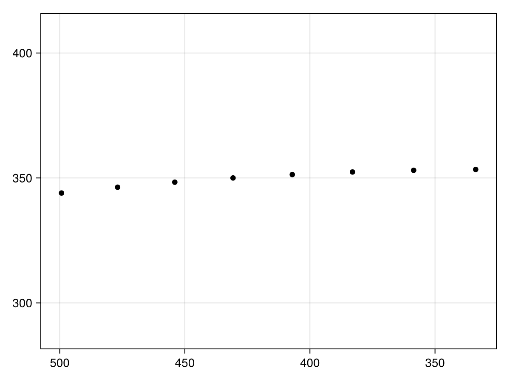
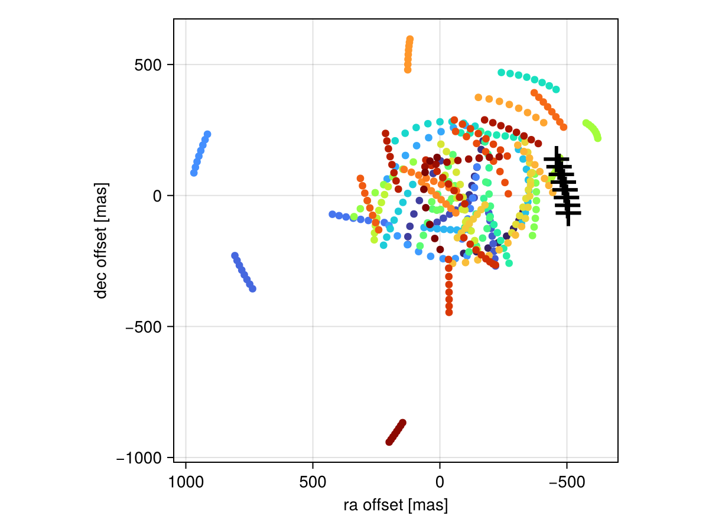
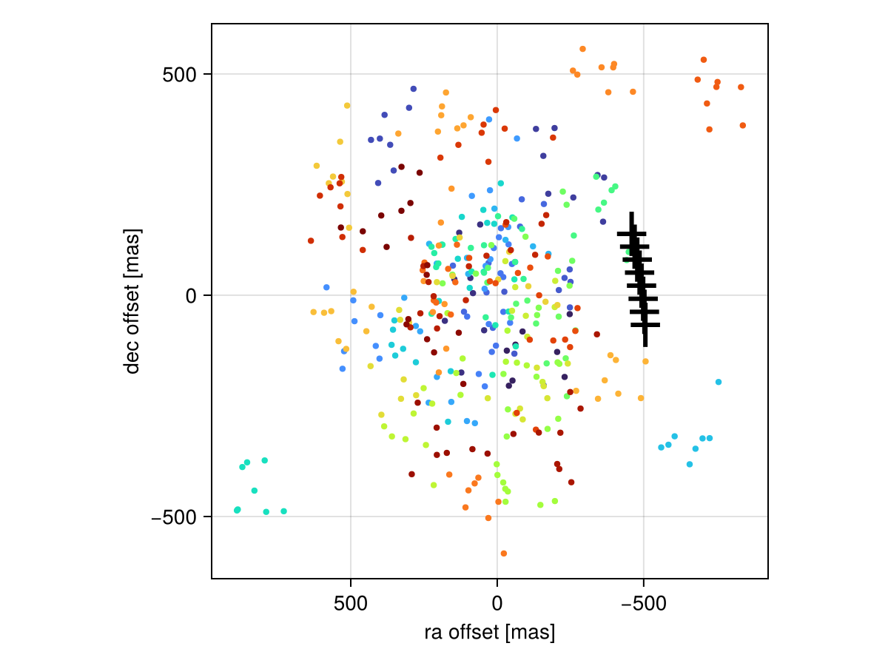
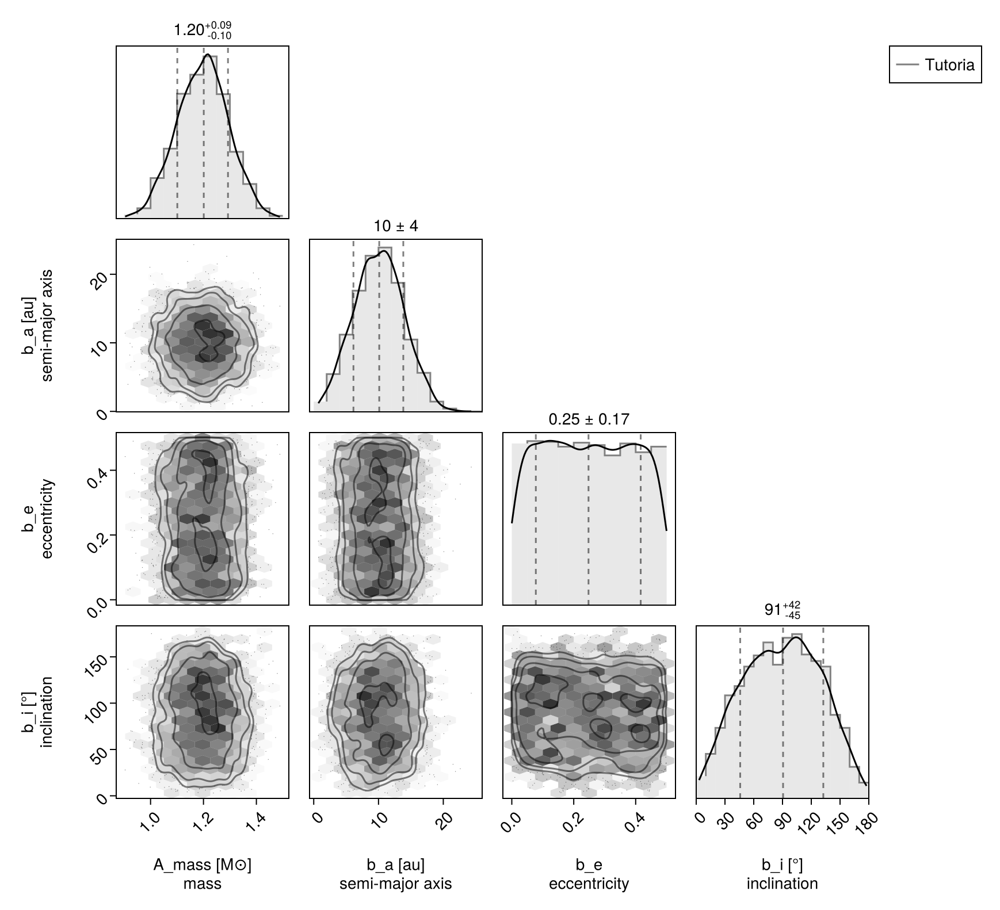

Prior Predictive Checks
The prior predictive distribution of a Bayesian model is what you get by sampling parameters directly from the priors and calculating where the model would place the data. For example, if sampling from relative astrometry, the prior predictive model is the distribution of (simulated) astrometry points corresponding to orbits drawn from the prior. For radial velocity data, these would be simulated RV points based on an RV curve drawn from the priors.
To generate a prior predictive distribution, one first needs to create a model. We will use the model and sample data from the Fit Astrometry tutorial:
using Octofitter
using CairoMakie
using PairPlots
using Distributions
astrom_dat = Table(;
epoch= [50000.,50120,50240,50360,50480,50600,50720,50840,],
ra = [-505.764,-502.57,-498.209,-492.678,-485.977,-478.11,-469.08,-458.896,],
dec = [-66.9298,-37.4722,-7.92755,21.6356, 51.1472, 80.5359, 109.729, 138.651,],
σ_ra = fill(50.0, 8),
σ_dec = fill(50.0, 8),
cor = fill(0.0, 8)
)
A = Body(
name="A",
variables=@variables begin
mass ~ truncated(Normal(1.2, 0.1), lower=0.1) # M⊙
end
)
b = Body(
name="b",
about=A,
variables=@variables begin
a ~ truncated(Normal(10, 4), lower=0, upper=100)
e ~ Uniform(0.0, 0.5)
i ~ Sine()
ω ~ UniformCircular()
Ω ~ UniformCircular()
θ ~ UniformCircular()
epoch = 50420.0 # reference epoch for θ. Choose an MJD date near your data.
end
)
astrom_obs = RelAstromObs(astrom_dat; target=b, ref=A, name="relastrom")
sys = System(
name="Tutoria",
bodies=[A, b],
observations=[astrom_obs],
variables=@variables begin
plx ~ truncated(Normal(50.0, 0.02), lower=0.1)
end
)[ Info: [Tutoria] observing_geometry = false (auto): worst accumulated bias 0.00151σ, 66.1× inside the 0.1σ limit — over 300 prior draws (seed 0xc70f177e5000001)
[ Info: [Tutoria] barycentric_lighttime = false (auto): changes no prediction at all — over 300 prior draws (seed 0xc70f177e5000001)θ is the planet's position angle at the reference epoch, so θ + epoch fixes the orbital phase. Both are orbital-element keywords in their own right, and PlanetOrbits does the conversion to periastron passage for you.
We can now draw one sample from the prior. generate_from_params returns a whole new system whose observations hold simulated data — one entry per observation in the original system, in the same order:
prior_draw_system = generate_from_params(sys)
prior_draw_astrometry = prior_draw_system.observations[1]RelAstromObs "relastrom" b vs A
Table with 6 columns and 8 rows:
epoch ra dec σ_ra σ_dec cor
┌────────────────────────────────────────────
1 │ 50000.0 499.286 343.969 50.0 50.0 0.0
2 │ 50120.0 476.863 346.295 50.0 50.0 0.0
3 │ 50240.0 454.007 348.306 50.0 50.0 0.0
4 │ 50360.0 430.732 349.995 50.0 50.0 0.0
5 │ 50480.0 407.052 351.356 50.0 50.0 0.0
6 │ 50600.0 382.983 352.382 50.0 50.0 0.0
7 │ 50720.0 358.543 353.064 50.0 50.0 0.0
8 │ 50840.0 333.747 353.397 50.0 50.0 0.0
The simulated observations come back in the order they were listed. If you have several and would rather look one up by name than by position:
only(filter(o -> Octofitter.likelihoodname(o) == "relastrom",
collect(prior_draw_system.observations)))And plot the generated astrometry:
Makie.scatter(prior_draw_astrometry.table.ra, prior_draw_astrometry.table.dec,color=:black, axis=(;autolimitaspect=1,xreversed=true))
We can repeat this many times to get a feel for our chosen priors in the domain of our data:
using Random
Random.seed!(1)
fig = Figure()
ax = Axis(
fig[1,1], xlabel="ra offset [mas]", ylabel="dec offset [mas]",
xreversed=true,
aspect=1
)
for i in 1:50
prior_draw_system = generate_from_params(sys)
prior_draw_astrometry = prior_draw_system.observations[1]
Makie.scatter!(
ax,
prior_draw_astrometry.table.ra,
prior_draw_astrometry.table.dec,
color=Makie.cgrad(:turbo)[i/50],
)
end
Makie.errorbars!(ax,astrom_dat.ra,astrom_dat.dec,astrom_dat.σ_dec,color=:black,linewidth=3)
Makie.errorbars!(ax,astrom_dat.ra,astrom_dat.dec,astrom_dat.σ_ra,direction=:x,color=:black,linewidth=3)
fig
The heavy black crosses are our actual data, while the colored ones are simulations drawn from our priors. Notice that our real data lies at a greater separation than most draws from the prior? That might mean the priors could be tweaked.
Noiseless versus noisy draws
By default generate_from_params returns the noiseless model prediction — exactly where the model says the planet is, with the original uncertainties carried over untouched. That is the right choice when you want to see the spread the priors alone produce, which is what the figure above shows.
For a true prior predictive distribution — draws from p(ỹ) = ∫ p(ỹ | θ) p(θ) dθ, including measurement noise — pass add_noise=true. Each observation then adds a draw from its own noise model, including any jitter the parameters specify:
Random.seed!(2)
fig = Figure()
ax = Axis(
fig[1,1], xlabel="ra offset [mas]", ylabel="dec offset [mas]",
xreversed=true, aspect=1
)
for i in 1:50
draw = generate_from_params(sys, drawfrompriors(sys); add_noise=true)
tbl = draw.observations[1].table
Makie.scatter!(ax, tbl.ra, tbl.dec, color=Makie.cgrad(:turbo)[i/50], markersize=6)
end
Makie.errorbars!(ax,astrom_dat.ra,astrom_dat.dec,astrom_dat.σ_dec,color=:black,linewidth=3)
Makie.errorbars!(ax,astrom_dat.ra,astrom_dat.dec,astrom_dat.σ_ra,direction=:x,color=:black,linewidth=3)
fig
Here drawfrompriors(sys) is the parameter draw and generate_from_params is the data draw; calling generate_from_params(sys) with no parameters does both in one step.
Sampling the prior directly
Sometimes what you want is not simulated data but the prior over parameters, in the same chain format octofit produces — so that you can run it through octoplot, octocorner, or your own diagnostics side by side with a posterior.
prior_only_model builds that model for you. It replaces every data likelihood with a BlankLikelihood that keeps the same name and the same @variables block, so the resulting chain lines up column for column with a chain from the full model:
prior_model = Octofitter.LogDensityModel(prior_only_model(sys))
prior_chain = octofit(prior_model, iterations=2000, adaptation=1000, verbosity=0)
octocorner(prior_model, prior_chain, small=true)
prior_only_model keeps prior-shaped terms — the ~ lines in a @variables block, and the UnitLengthPrior behind each UniformCircular. That is deliberate: they reshape the prior rather than adding data, so a "prior only" model is the one that still has them. prior_only_model(sys; exclude_all=true) drops those as well, which is for evidence bookkeeping (see Bayesian evidence) and not for inference — without that term a UniformCircular variable's (x, y) pair is free to wander onto the origin, where the angle is undefined.